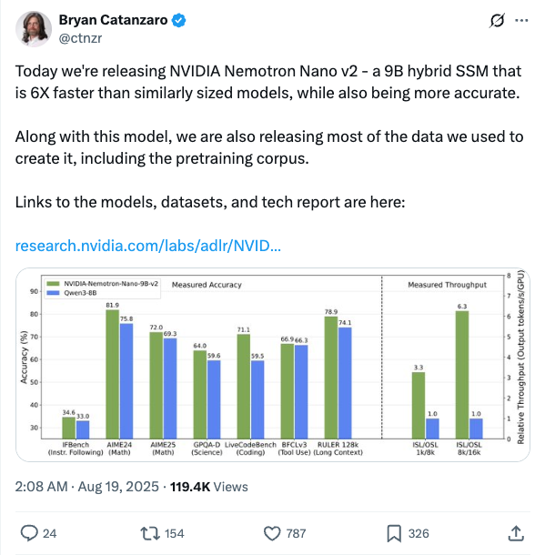

ctnzr_英伟达发布Nemotron Nano v2模型及数据集
发布时间: 2025-08-18T18:08:00.000Z 英伟达Bryan Catanzaro宣布发布Nemotron Nano v2模型，这是一款9B混合SSM，性能比同尺寸模型快6倍且更精确。同时，英伟达还开源了用于创建该模型的大部分数据，包括预训练语料库，并提供了模型、数据集和技术报告的链接，推动AI社区发展。
2025-08-18
英伟达Bryan Catanzaro宣布发布Nemotron Nano v2模型，这是一款9B混合SSM，性能比同尺寸模型快6倍且更精确。同时，英伟达还开源了用于创建该模型的大部分数据，包括预训练语料库，并提供了模型、数据集和技术报告的链接，推动AI社区发展。

知名AI研究者Thomas Wolf关注到腾讯混元实验室发布了一款名为“Genie 3”的开源替代方案，该模型能够生成可实时控制的逼真视频。其亮点包括长期一致性、无需昂贵渲染，并基于百万级游戏录像进行训练，为视频生成领域带来新进展。

Google Labs宣布其Flow平台已生成超过1亿个视频，为感谢用户支持，特推出两项更新：所有Ultra用户AI积分翻倍，并启动@FlowbyGoogle官方账号，提供Flow使用技巧和最新资讯。此举旨在回馈社区，并进一步推广Flow视频生成服务。

艾伦人工智能研究所（Allen AI）推出MoNaCo，这是一个专为评估大型语言模型（LLMs）跨源推理能力而设计的新基准。MoNaCo旨在测试LLMs整合数十甚至数百个来源证据的能力，以解决现有基准未能充分考察模型在复杂信息聚合方面表现的不足，从而推动LLMs在研究、决策和探索中的应用。
Datology AI的Ari Morcos宣布推出BeyondWeb合成数据生成方法，该方法在性能上显著超越现有开源合成数据，是其数据策展管线的关键组成部分。BeyondWeb旨在解决大规模生成高质量合成数据的挑战，通过数千次实验优化，已能生成数万亿合成tokens。此方法帮助克服大模型预训练的“数据墙”问题，并已实现30亿参数LLM超越80亿参数模型的性能，为数据科学提供了新的见解。

OpenAI联合创始人Greg Brockman分享了一项引人注目的进展，用户现在可以通过统一的提示词，对比GPT-1至GPT-5系列模型的输出效果。此举旨在直观展示OpenAI在大型语言模型技术上的迭代与显著进步，揭示不同代模型间的性能差异和演进轨迹，为理解AI发展提供清晰视角。

百度文库与百度网盘联合发布全球首个全端通用Agent——GenFlow2.0，其核心亮点在于能够调度百余个AI专家Agent并行处理5-6个复杂多模态任务，平均3分钟完成，并支持任务全程实时干预与需求修改。GenFlow2.0深度整合百度文库、网盘及学术海量公私域数据，实现生产资料与工具无缝衔接，大幅提升内容生成质量与效率。技术上，它基于沧舟OS和MoE架构，采用Multi-Agent协作与智能调度，旨在构建“无所不能、无所不在”的AI生产力，重新定义通用Agent边界，并通过开放生态与硬件厂商合作，实现AI与用户场景的深度融合，形成难以复制的生态护城河。

字节跳动Seed团队发布并开源了M3-Agent，这是一种新型多模态智能体框架，具备像人类一样的长期记忆能力，能处理实时视听输入并积累语义知识。M3-Agent通过记忆过程和控制过程并行运作，利用强化学习进行多轮推理和迭代记忆检索，显著优于现有基线模型。为评估其记忆和推理能力，团队还开发了长视频问答基准M3-Bench并同步开源。M3-Agent在M3-Bench等多个基准测试中表现出色，尤其在人类理解和跨模态推理方面展现卓越性能，为多模态智能体的长期一致性与智能水平提升提供了新范式。
文章深度剖析了OpenAI自GPT-2以来开放模型gpt-oss的进化之路，详细解读了gpt-oss-20b和120b的架构创新与优化，包括移除Dropout、采用RoPE、SwiGLU、混合专家模型(MoE)、分组查询注意力(GQA)及滑动窗口注意力等。文章还将其与Qwen3进行对比，探讨了模型宽度与深度、专家配置、注意力偏差等差异。此外，文中还介绍了MXFP4量化优化使其能在单GPU运行，并分析了其训练概况、推理工作量控制及基准测试表现，指出gpt-oss在性能上已接近顶级专有模型，为开放权重模型发展带来积极影响。

文章揭示，提示词优化对AI性能提升的贡献与模型升级同等重要，甚至更高。马里兰大学、MIT等机构研究DALL-E 2与DALL-E 3发现，模型升级仅带来51%的性能提升，而用户通过“提示词适应”实现的优化贡献了高达49%的性能飞跃。这表明，用户根据模型能力动态调整提示词是释放大模型潜力的关键。研究强调，尽管自动化提示词存在局限，人类在提示词设计中的主动性仍不可或缺，提示词工程是提升生成式AI效能的核心策略。

本文汇总了8月18日arXiv上发布的多项前沿人工智能研究。中山大学与新加坡国立大学提出LogicCLIP，提升视觉语言模型逻辑理解。多项研究聚焦多模态大模型，涵盖视频时间定位、3D视觉理解及代码生成等。生成式AI方面，成果包括音频驱动肖像动画、电影风格视频生成及特定风格图像生成。自动驾驶领域涌现Polaris、ImagiDrive、VeteranAD等新方法。计算机视觉方面，有高效相机参数估计和鲁棒目标跟踪。医学影像分析亦有进展。这些研究全面展现了当前AI在多模态理解、生成、自动驾驶及视觉推理等领域的最新突破与进展。
ToonComposer提出一种新颖的生成式后关键帧模型，通过统一的“后关键帧”流程，自动化卡通制作中繁琐的中间帧补全与上色任务。该模型基于DiT架构，利用稀疏草图注入和区域级控制策略，仅需稀疏关键帧草图和单张上色参考图，即可生成高质量、风格一致的卡通视频序列。ToonComposer显著降低了对逐帧草图的需求，避免了跨阶段误差累积，并引入空间低秩适配器（SLRA）高效保留时间先验。实验证明，ToonComposer在视觉保真度、动作连贯性和制作效率方面均优于现有方法，为卡通创作提供了高效灵活的解决方案。

Archon是一个为AI编码助手设计的命令中心和MCP服务器，旨在通过自定义知识库和任务管理提升AI驱动的编码效率。它提供智能网页抓取、文档处理、高级RAG策略和多LLM支持（如OpenAI、Ollama、Gemini）。Archon采用微服务架构，支持实时更新和协作，帮助AI代理访问文档、进行智能搜索和管理任务，是AI编码助手的理想上下文管理工具。

Parlant是一个创新的AI智能体框架，旨在解决大型语言模型（LLM）在遵循指令和处理边缘情况时表现不一致的问题。它通过“教导原则而非脚本”的方式，确保LLM智能体能够可靠地遵循预设规则和指南，从而实现可预测且一致的行为。该框架提供自然语言定义规则、动态指南匹配、可靠工具集成、会话分析及内置防护机制等企业级功能，适用于金融服务、医疗保健、电子商务和法律科技等对合规性和准确性要求高的行业，帮助开发者构建生产就绪的AI智能体。

该GitHub仓库提供了从零开始开发、预训练和微调类GPT大语言模型的代码，是《从零构建大语言模型》一书的官方代码库。项目旨在通过亲手编码，帮助读者深入理解LLM的内部工作原理，其方法论与大型基础模型的构建方式相呼应。代码基于PyTorch实现，不依赖外部LLM库，支持在常规笔记本电脑上运行，并可利用GPU加速。此外，仓库还包含加载预训练模型权重进行微调的功能，并提供了丰富的章节代码、练习解决方案及额外学习材料，是学习和实践LLM开发的宝贵资源。

该GitHub仓库“Awesome LLM Apps”是一个精选的大语言模型（LLM）应用集合，涵盖了基于检索增强生成（RAG）、AI智能体、多智能体团队、MCP（多模态控制平面）和语音智能体等多种先进技术构建的应用程序。它不仅展示了OpenAI、Anthropic、Google等主流模型，也包含了DeepSeek、Qwen、Llama等开源模型在本地运行的实例。项目旨在提供LLM在代码分析、数据处理、金融、医疗、娱乐等不同领域的实际应用案例，并促进开源生态发展。

Motia是一个统一的后端框架，旨在解决现代软件工程中的运行时碎片化问题。它将API、后台任务、工作流和AI智能体整合到一个单一的连贯系统中，提供共享的可观测性和一致的开发体验。Motia支持JavaScript、TypeScript、Python等多种语言在同一代码库中协同工作，通过“Step”这一核心概念简化后端开发，实现事件驱动架构、内置容错、统一状态管理和自动化可观测性，显著提升开发效率和系统可伸缩性。
Bytebot是一个开源AI桌面代理，为AI提供完整的虚拟桌面环境，使其能像人类一样操作电脑，执行跨应用、多步骤的复杂任务。它支持使用任何桌面应用、管理文件、处理文档（PDF、表格）、登录网站等。核心组件包括虚拟桌面、AI代理、任务界面和API，支持Anthropic、OpenAI、Google Gemini等主流AI模型。Bytebot可用于业务流程自动化、开发测试及研究分析，提供数据隐私和完全控制的自托管部署选项。

我们研究大型语言模型（LLMs）在强化学习（RL）中作为智能体搜索任务的高效模拟器潜力，从而减少对昂贵的外部搜索引擎交互的依赖。为此，我们首先通过结构化提示和重复采样来量化LLMs的内在搜索能力，我们称之为自搜索。我们的结果表明，LLMs在推理预算方面表现出强大的扩展行为，在问答基准测试（包括具有挑战性的BrowseComp任务）上实现了高pass@k。基于这些观察，我们引入了自搜索强化学习（SSRL），它通过基于格式和基于规则的奖励来增强LLMs的自搜索能力。SSRL使模型能够内部迭代地完善其知识利用，而无需访问外部工具。实证评估表明，SSRL训练的策略模型为搜索驱动的RL训练提供了一个经济高效且稳定的环境，减少了对外部搜索引擎的依赖，并促进了稳健的模拟到现实迁移。我们得出以下结论：1）LLMs拥有可以有效激发以实现高性能的世界知识；2）SSRL展示了利用内部知识减少幻觉的潜力；3）SSRL训练的模型可以无缝地与外部搜索引擎集成，无需额外工作。我们的发现突出了LLMs支持更具可扩展性的RL智能体训练的潜力。

继OpenAI提出“图像思维”概念之后，近期研究致力于在推理过程中激发视觉信息的使用，以提升模型在感知和推理任务中的性能。然而，据我们所知，目前尚无开源工作能提供与专有模型（O3）一样丰富的功能集，即通过代码执行多样化的图像操作并同时增强逻辑推理能力。本文在此方向上进行了初步尝试，引入了Thyme（超越图像的思考），这是一种新颖的范式，旨在使多模态大语言模型（MLLMs）通过自主生成和执行可执行代码来执行多样化的图像处理和计算操作，从而超越现有的“图像思维”方法。这种方法不仅促进了丰富的即时图像操作（例如，裁剪、旋转、对比度增强），还允许进行数学计算，同时在决定何时以及如何应用这些操作方面保持高度自主性。我们通过两阶段训练策略激活了这一能力：首先在包含50万样本的精选数据集上进行SFT（监督微调）以教授代码生成，随后进入强化学习（RL）阶段以优化决策。在RL阶段，我们手动收集并设计了高分辨率问答对以增加学习难度，并提出了GRPO-ATS（带有自适应温度采样的组相对策略优化）算法，该算法对文本和代码生成应用不同的温度，以平衡推理探索与代码执行精度。我们进行了广泛的实验分析和消融研究。在近20个基准测试上的综合评估表明，Thyme带来了显著且持续的性能提升，尤其是在具有挑战性的高分辨率感知和复杂推理任务中。

大型语言模型（LLM）预训练的最新进展表明，简单地扩展数据量最终会导致收益递减，触及数据瓶颈。为此，使用合成数据进行预训练已成为推动性能前沿的一个有前景的范式。尽管如此，影响合成数据质量的因素仍然知之甚少。在这项工作中，我们引入了 BeyondWeb，一个用于预训练的高质量合成数据生成框架。BeyondWeb 显著扩展了传统网络规模数据集的能力，在14项基准评估的平均结果中，其性能分别优于最先进的合成预训练数据集，如 Cosmopedia 和 Nemotron-CC 的高质量合成子集（Nemotron-Synth），最高达 5.1 个百分点和 2.6 个百分点。与开放网络数据相比，它能实现高达 7.7 倍的训练速度提升；与 Nemotron-Synth 相比，则能实现 2.7 倍的训练速度提升。值得注意的是，一个在 BeyondWeb 上训练了 1800 亿个 token 的 3B 模型，其性能优于在 Cosmopedia 上以相同 token 预算训练的 8B 模型。我们还从 BeyondWeb 中提出了关于预训练合成数据的几点见解：驱动其优势的因素、如何以及重新措辞哪些数据，以及模型大小和系列对数据质量的影响。总的来说，我们的工作表明，生成高质量合成预训练数据没有万能药。最佳结果需要共同优化多个因素，这是一项具有挑战性的任务，需要严谨的科学和实践经验。天真的方法可能只会带来微小的改进，并可能付出巨大代价，而执行良好的方法则能带来变革性的改进，BeyondWeb 就是一个例证。

尽管LLM推理已成为许多下游应用的关键工作负载，但由于其庞大的内存占用和带宽需求，高效地进行LLM推理仍具挑战。与此同时，在过去几十年中，计算能力持续超越内存容量和带宽，这一趋势在现代GPU硬件中依然明显，并加剧了LLM推理的挑战。因此，新的算法正在涌现，它们以增加计算量来换取减少内存操作。为此，我们提出了XQuant，它利用了这一趋势，通过低位量化实现了内存消耗的数量级减少，并且相对于最先进的KV缓存量化方法，具有显著的精度优势。我们通过量化和缓存层输入激活X（而非使用标准KV缓存），然后在推理过程中即时重物化键（Keys）和值（Values）来实现这一点。这使得内存立即节省了2倍，相比于KV缓存。通过应用XQuant，我们实现了高达约7.7倍的内存节省，与FP16基线相比，困惑度下降小于0.1。此外，我们的方法利用了X值在不同层之间相似的事实。基于这一观察，我们引入了XQuant-CL，它利用X嵌入中的跨层相似性进行极致压缩。在不同模型上，XQuant-CL相对于FP16基线实现了高达10倍的内存节省，困惑度仅下降0.01；在困惑度下降0.1的情况下，内存节省可达12.5倍。XQuant利用硬件平台快速增长的计算能力来消除内存瓶颈，同时超越了最先进的KV缓存量化方法，并在各种模型上实现了接近FP16的精度。

音频驱动肖像动画的最新进展展现了令人印象深刻的能力。然而，现有方法难以在运动自然度、唇形同步准确性和视觉质量等多个维度上与细粒度的人类偏好对齐。这归因于在相互冲突的竞争性偏好目标之间进行优化的困难，以及缺乏带有维度偏好标注的大规模高质量数据集。为了解决这些问题，我们首先引入了Talking-Critic，一个多模态奖励模型，它学习与人类偏好对齐的奖励函数，以量化生成视频满足多维度期望的程度。利用该模型，我们构建了Talking-NSQ，一个包含41万个偏好对的大规模多维度人类偏好数据集。最后，我们提出了时步-层自适应多专家偏好优化（TLPO），这是一个新颖的框架，用于将基于扩散的肖像动画模型与细粒度、多维度偏好对齐。TLPO将偏好解耦为专门的专家模块，这些模块随后在时步和网络层之间融合，从而在所有维度上实现全面、细粒度的增强，而不会产生相互干扰。实验表明，Talking-Critic在与人类偏好评分对齐方面显著优于现有方法。同时，TLPO在唇形同步准确度、运动自然度和视觉质量方面比基线模型取得了显著改进，在定性和定量评估中均表现出卓越的性能。

我们引入了StyleMM，这是一个新颖的框架，能够根据用户定义的文本描述来构建风格化的三维可变形模型（3DMM），以指定目标风格。我们的方法基于预训练的网格变形网络和用于原始3DMM真实人脸的纹理生成器，通过使用扩散模型进行文本引导的图像到图像（i2i）翻译生成的风格化人脸图像来微调这些模型，这些图像作为渲染网格的风格化目标。为了防止在i2i翻译过程中出现身份、面部对齐或表情的不必要变化，我们引入了一种风格化方法，该方法明确保留了源图像的面部属性。通过在图像风格化过程中保持这些关键属性，所提出的方法通过基于图像的训练确保了在3DMM参数空间中一致的三维风格迁移。一旦训练完成，StyleMM能够前向生成风格化的人脸网格，并对形状、表情和纹理参数进行明确控制，从而生成具有一致顶点连接性和可动画性的网格。定量和定性评估表明，我们的方法在身份级面部多样性和风格化能力方面优于现有最先进的方法。代码和视频可在kwanyun.github.io/stylemm_page获取。